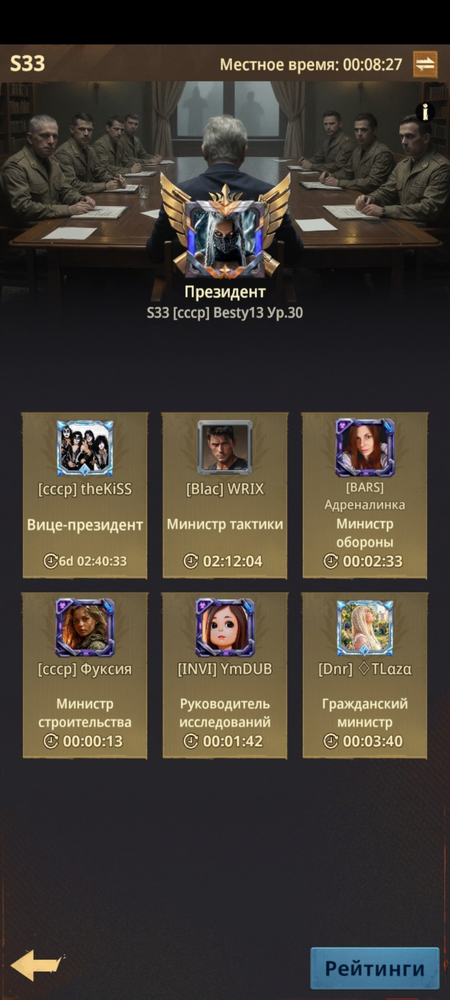
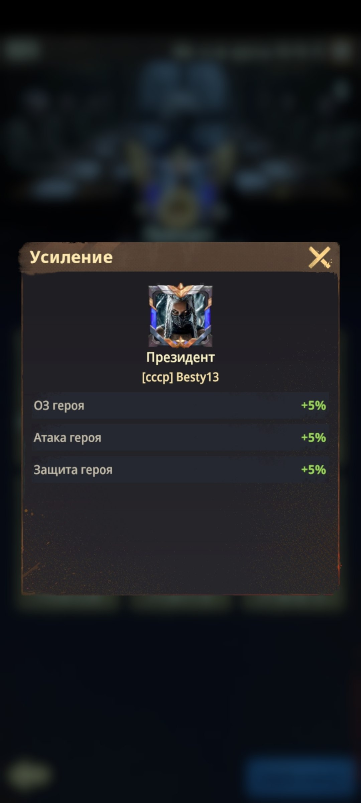
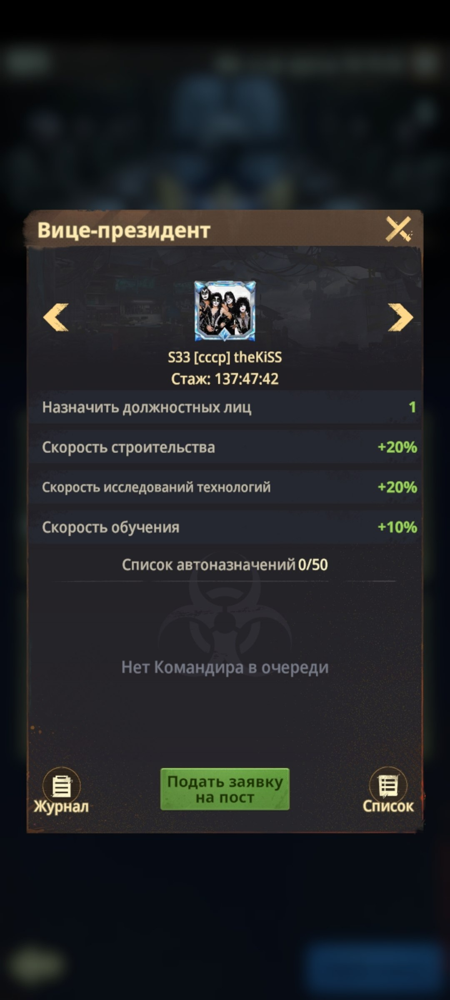
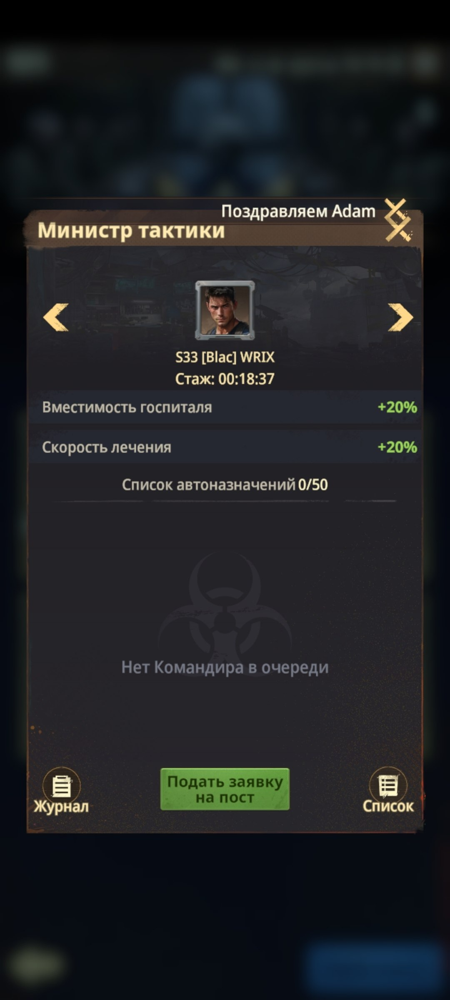
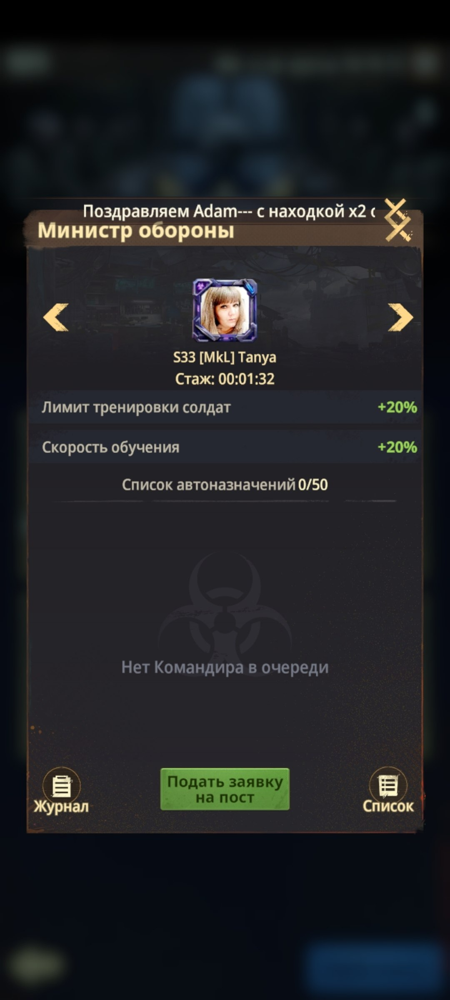
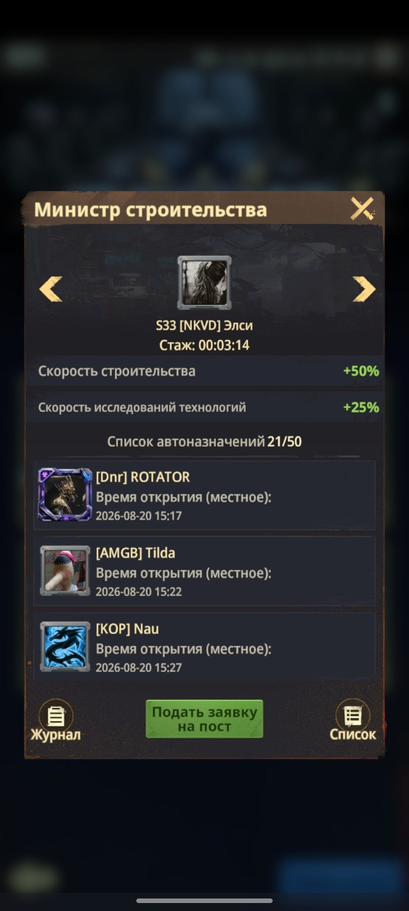
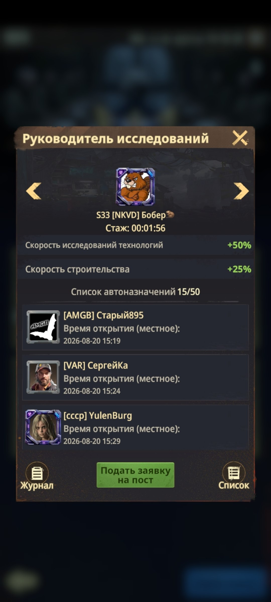
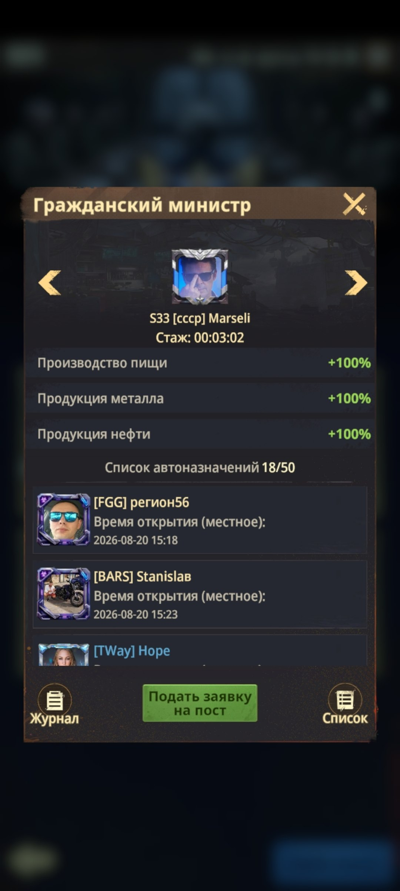

🏛️ Должности министров
🏛️ ДОЛЖНОСТИ МИНИСТРОВ После завершения события «Покорение Столицы» лидер альянса, захватившего Капитолий, становится Президентом сервера. После этого открываются должности министров. Игроки серверов с базой 16-го уровня и выше могут подавать заявки на все должности, кроме Президента и Вице-президента. Выберите нужную должность, подайте заявку и дождитесь назначения. В обычной ситуации срок нахождения на должности составляет около 5 минут. Если очередь большая, например по вторникам и средам, время могут сократить до 1 минуты, 45 или 30 секунд. ⏱️ Кликер - неофициальный лайфхак, который некоторые игроки используют при большой очереди. Ему задают длительность нахождения игрока на посту, после чего он автоматически освобождает должность через заданный промежуток времени. Игра не предусматривает эту функцию официально. Кликер может отключиться из-за интернета или технических условий, а при входе в игру его работа обычно прекращается. 👇 Листайте страницы, чтобы посмотреть описание и бонусы каждой должности.

🏛️ Общий экран должностей министров
👑 ПРЕЗИДЕНТ Президент одобряет кандидатов на должности. Вице-президента он также назначает лично, поскольку это его правая рука. 📜 Основные задачи Президента: • следить за порядком на сервере; • задавать общий вектор развития; • своевременно сообщать игрокам о ситуациях, задачах и общих целях через «Письмо Президента». ⚙️ При необходимости Президент может передать пост врио для оперативной помощи в продвижении очереди на должность Гражданского командира, если такая должность предусмотрена. Это связано с тем, что назначение на неё возможно только при соответствующих полномочиях. ✨ На представленном примере должность Президента даёт бонусы к характеристикам героев: здоровье, атака и защита увеличены на +5%.

👑 Усиление Президента: здоровье, атака и защита героев +5%
🤝 ВИЦЕ-ПРЕЗИДЕНТ Вице-президент заменяет Президента, когда это необходимо, и на время получает возможность действовать от его имени. 📜 Основные полномочия: • самостоятельно назначать игроков на должности; • следить за порядком на должностях; • помогать Президенту поддерживать стабильную работу сервера. ⚙️ Вице-президент - правая рука Президента и его главный помощник в управлении должностями. Благодаря этой роли очередь назначений может продвигаться быстрее даже в периоды высокой активности. ✨ На представленном примере должность даёт бонусы: +20% к скорости строительства, +20% к скорости исследований технологий и +10% к скорости обучения солдат.

🤝 Вице-президент: назначение должностей и бонусы
⚔️ МИНИСТР ТАКТИКИ Используйте эту должность, когда после игровых событий у Вас накопилось много раненых солдат. 🏥 Правильный порядок действий: 1. Сначала встаньте на должность Министра тактики. 2. После назначения отправляйте солдат на лечение небольшими партиями. 3. Ставьте лечение примерно на 1-1,5 часа, чтобы эффективно использовать бонус должности. 💡 Не отправляйте всех раненых сразу до назначения - сначала активируйте должность, а уже потом запускайте лечение. ✨ На представленном примере должность даёт +20% к вместимости Госпиталя и +20% к скорости лечения.

⚔️ Министр тактики: вместимость Госпиталя и скорость лечения +20%
🛡️ МИНИСТР ОБОРОНЫ Используйте эту должность для создания и пополнения Полигона новыми солдатами. 🪖 Правильный порядок действий: 1. Сначала встаньте на должность Министра обороны. 2. Дождитесь назначения и активации должности. 3. Только после этого начинайте тренировку или отправляйте новых солдат на обучение. 💡 Не запускайте тренировку заранее - сначала активируйте бонус должности, чтобы использовать увеличенный лимит и скорость обучения. ✨ На представленном примере должность даёт +20% к лимиту тренировки солдат и +20% к скорости обучения.

🛡️ Министр обороны: лимит тренировки и скорость обучения +20%
🏗️ МИНИСТР СТРОИТЕЛЬСТВА Используйте эту должность для сокращения времени строительства, особенно во вторник и пятницу. 🏗️ Правильный порядок действий: 1. Сначала встаньте на должность Министра строительства. 2. Дождитесь назначения и активации должности. 3. Только после этого начинайте строительство или завершайте подготовленные улучшения. 💡 Не запускайте строительство заранее - сначала активируйте бонус должности, чтобы всё время улучшения прошло с уменьшенной длительностью. 📅 Во вторник и пятницу старайтесь заранее подготовить здания к запуску или завершению, чтобы получить максимум пользы от бонуса. ✨ На представленном примере должность даёт +50% к скорости строительства и +25% к скорости исследований технологий.

🏗️ Министр строительства: скорость строительства +50%, исследования +25%
🔬 РУКОВОДИТЕЛЬ ИССЛЕДОВАНИЙ Используйте эту должность для сокращения времени исследований, особенно в среду. 🧪 Правильный порядок действий: 1. Сначала встаньте на должность Руководителя исследований. 2. Дождитесь назначения и активации должности. 3. Только после этого начинайте исследования или завершайте подготовленные технологии. 💡 Не запускайте исследования заранее - сначала активируйте бонус должности, чтобы всё время исследования прошло с уменьшенной длительностью. 📅 В среду старайтесь заранее подготовить исследования к запуску или завершению, чтобы получить максимум пользы от бонуса. ✨ На представленном примере должность даёт +50% к скорости исследований технологий и +25% к скорости строительства.

🔬 Руководитель исследований: исследования +50%, строительство +25%
🏙️ ГРАЖДАНСКИЙ МИНИСТР Используйте эту должность всегда, когда есть возможность, чтобы увеличить производство ресурсов на Базе примерно вдвое. 🌾 Что усиливается: • производство пшена; • производство металла; • производство нефти. 🏗️ Правильный порядок действий: 1. До вступления в должность соберите ресурсы, которые уже накопились на Базе. 2. Затем встаньте на должность Гражданского министра и дождитесь активации бонуса. 3. После назначения оставьте производство ресурсов работать под усилением должности. 💡 Не забирайте накопленные ресурсы после назначения - сначала соберите их до вступления, чтобы затем получить максимум от увеличенного производства. ✨ На представленном примере производство пшена, металла и нефти увеличивается на +100%.

🏙️ Гражданский министр: производство ресурсов +100%